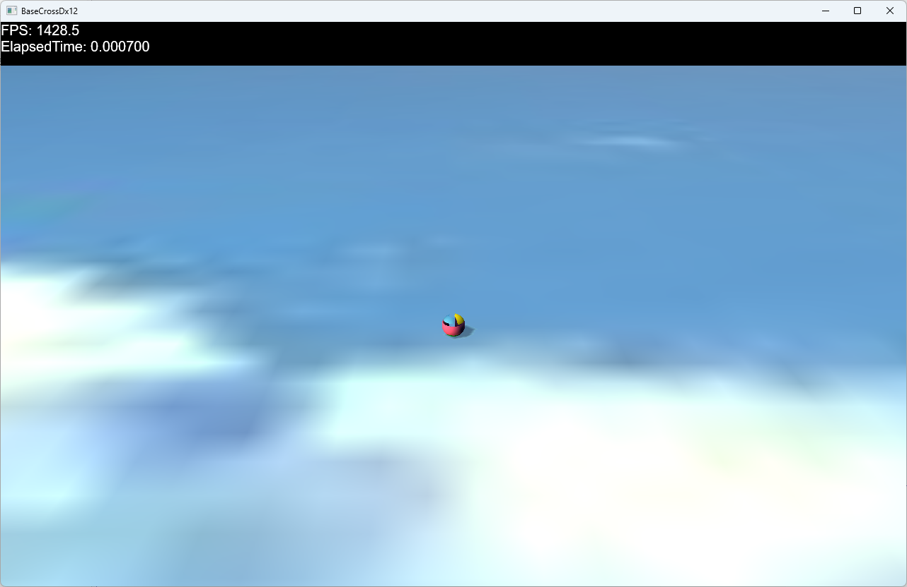

void Scene::CreateAssetResources(ID3D12Device* pDevice, ID3D12GraphicsCommandList* pCommandList)
{
//中略
//サウンド
std::wstring cursorWav = App::GetRelativeAssetsDir() + L"cursor.wav";
RegisterWav(L"cursor", cursorWav);
//BGM
std::wstring nanikaWav = App::GetRelativeAssetsDir() + L"nanika.wav";
RegisterWav(L"nanika", nanikaWav);
//中略
}
それでミュージックですがGameStage.hにm_BGMというポインタを定義します。
//--------------------------------------------------------------------------------------
// ゲームステージ
//--------------------------------------------------------------------------------------
class GameStage : public Stage {
//中略
std::shared_ptr<SoundItem> m_BGM;
public:
//中略
};
そしてGameStage::OnCreate()関数で以下のように再生を開始します。
void GameStage::OnCreate() {
//中略
auto XAPtr = Scene::Get()->GetXAudio2Manager();
m_BGM = XAPtr->Start(L"nanika", XAUDIO2_LOOP_INFINITE, 0.1f);
}
これでL"nanika"というミュージックが再生されます。XAUDIO2_LOOP_INFINITEというのは、ループ再生の意味です。
void GameStage::OnDestroy() {
//BGMのストップ
auto XAPtr = Scene::Get()->GetXAudio2Manager();
XAPtr->Stop(m_BGM);
}
という記述が必要です。
void Player::OnPushA() {
//中略
//サウンドの再生
auto XAPtr = Scene::Get()->GetXAudio2Manager();
XAPtr->Start(L"cursor", 0, 0.5f);
}
と書けばL"cursor"で登録された音が鳴ります。ミュージックと違ってメンバ変数にSoundItemを持っていないので（XAPtrはローカル変数）再生終了を気にする必要はありません。